Reads every session's state
Each tab shows whether its agent is working, finished or blocked on a permission prompt. ⌘J jumps to the longest wait.
Studio runs Claude Code, Codex and Antigravity in tabs and split panes, and marks the session that is waiting for you. Free and MIT licensed, for macOS 14 or later.
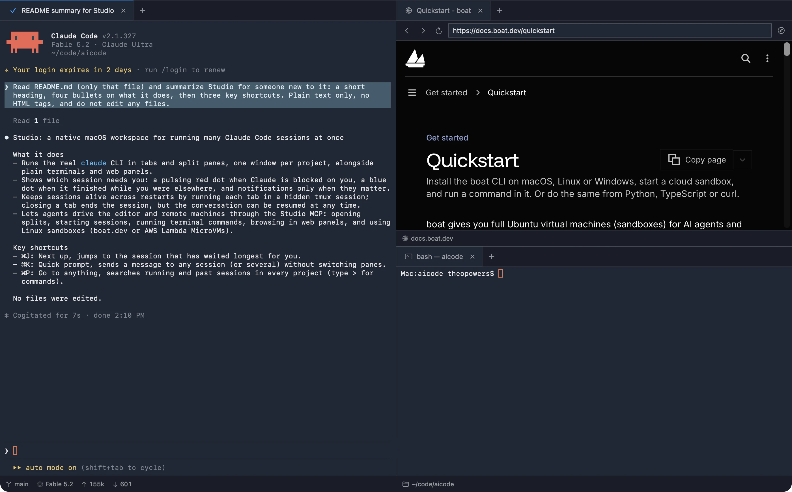
Every pane is a live agent session, a shell or a web page. Drag a tab onto an edge to split it. Each project gets a window with its own layout.
The queue
Studio watches every session for you. A red dot on a tab means its agent is blocked on a question, a blue dot means it finished, and one key takes you to the one that has waited longest.
Each tab shows whether its agent is working, finished or blocked on a permission prompt. ⌘J jumps to the longest wait.
Put a dev server, a pull request or the docs in a pane. Agents can open, read and click those pages too.
A file tab has the tree on its left and switches between the project and each session's worktree. Markdown opens rendered, and images in a viewer. ⇧⌘E opens one.
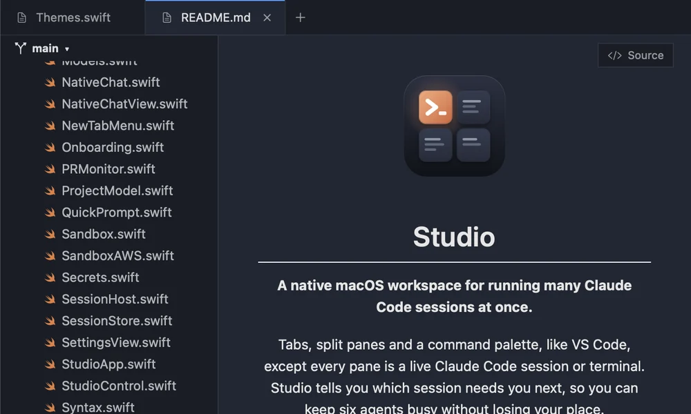
Through the built-in Studio MCP an agent opens splits, starts helper sessions and runs commands in a terminal beside it.
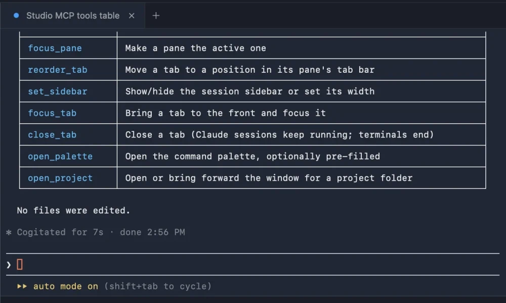
Plain terminals open with ⌃` and sit in the same tabs and splits. Drop a file on a pane to paste its path.
An agent asks for a key by name and you type it into this panel. Commands get it as an environment variable, and Studio scrubs it from their output. Each key can expire.
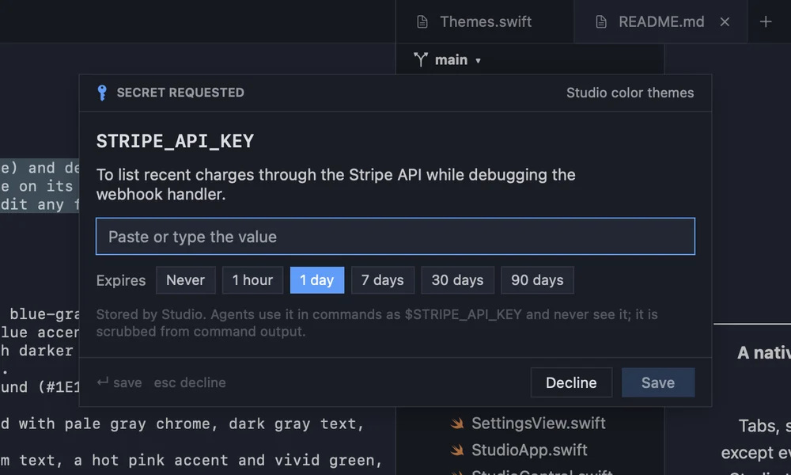
Studio starts each agent's own CLI in a real terminal, signed in with your account. Mix all three in one window.
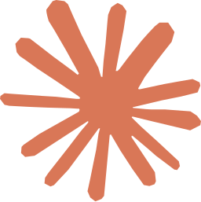
From Anthropic. Your slash commands, hooks, MCP servers and settings work unchanged.
From OpenAI. Titles, live status and approvals come from Codex's own session logs.
From Google. The Studio tools arrive as a plugin you install once.
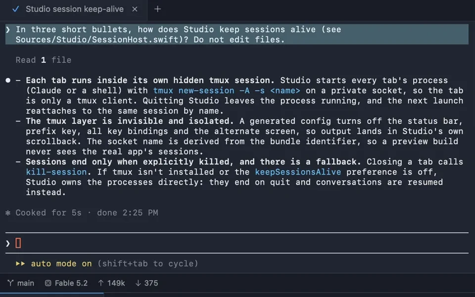
Pick Studio when you already work in agent CLIs and run several at once. It keeps the CLIs and accounts you have and adds the window around them.
⌘P searches running and past sessions in every project. Pick one in another project and its window opens.
Type > for commands: change the theme, open a URL in a web panel, send a snippet or start a session on a worker.
The session, the file tree and the editor all take the theme. Pick one in Settings (⌘,) or with Change Theme in the palette, which previews each as you move through the list.
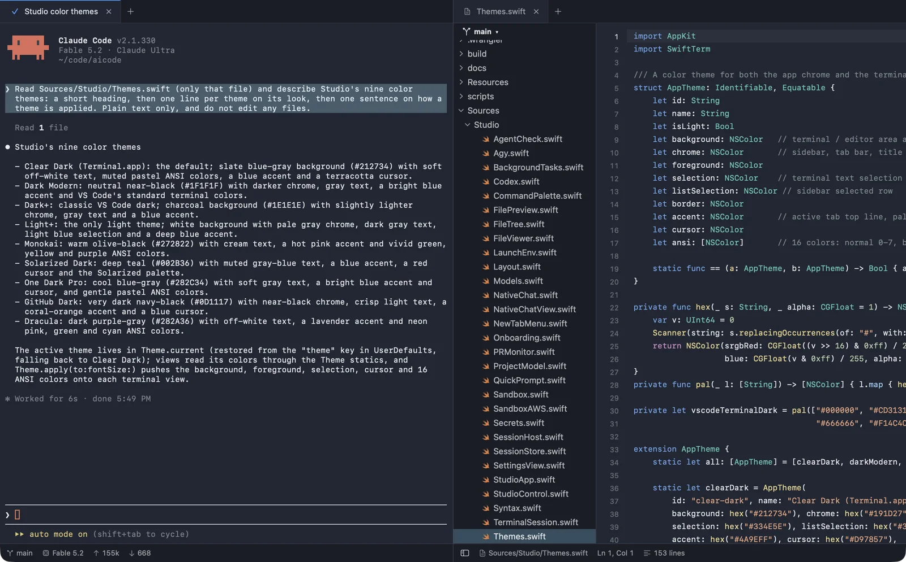
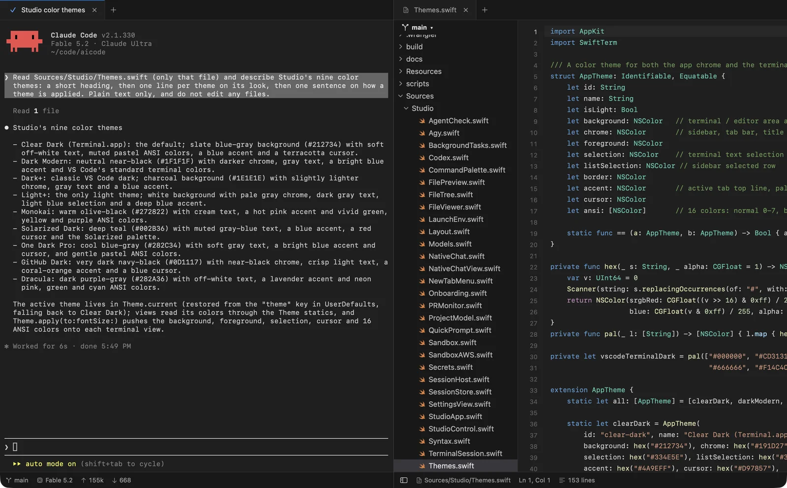
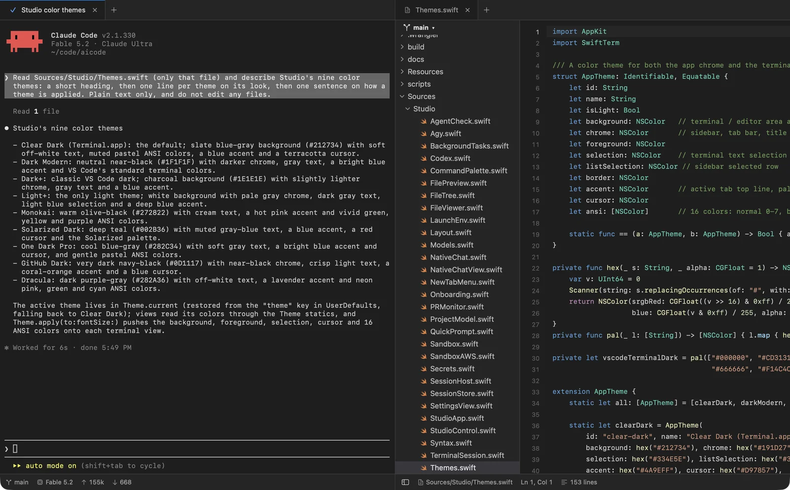
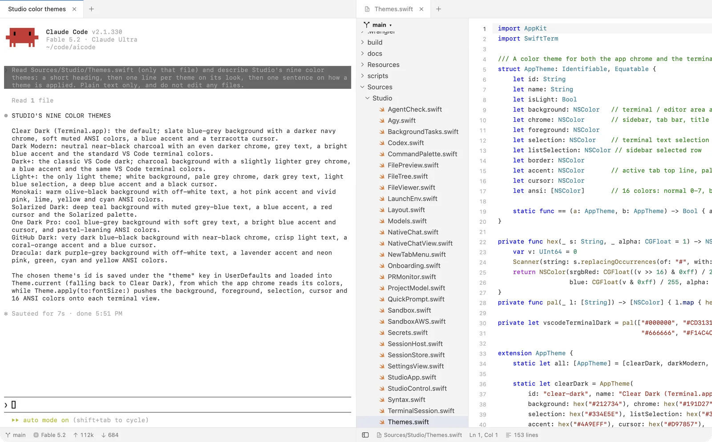
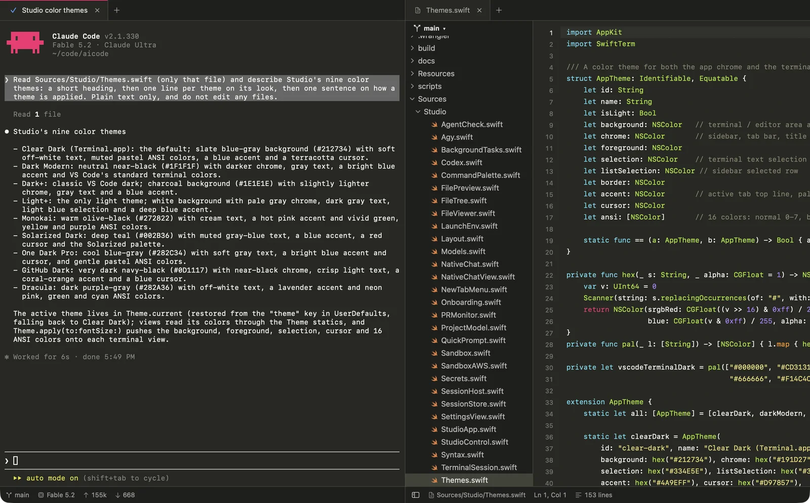
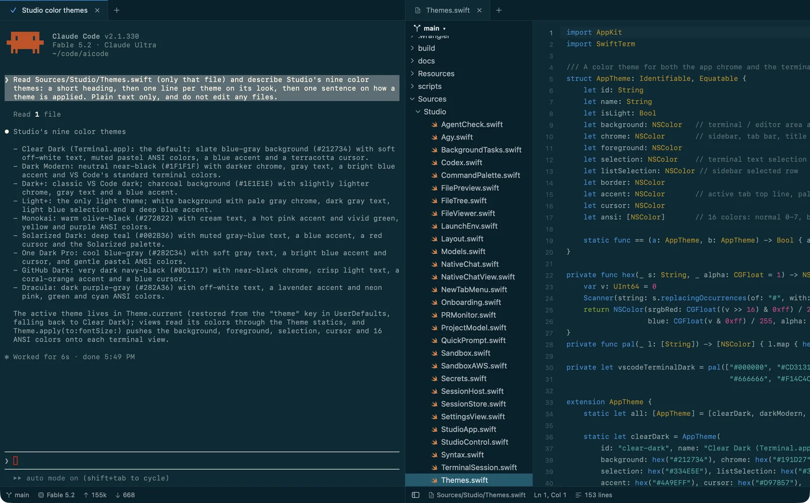
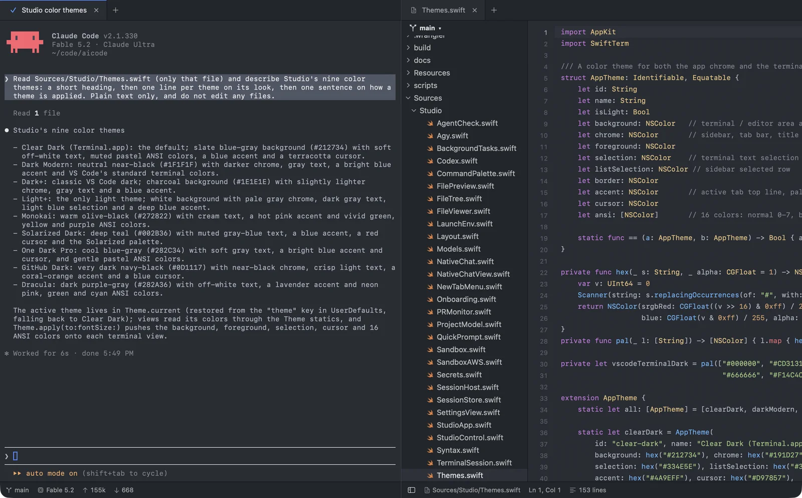
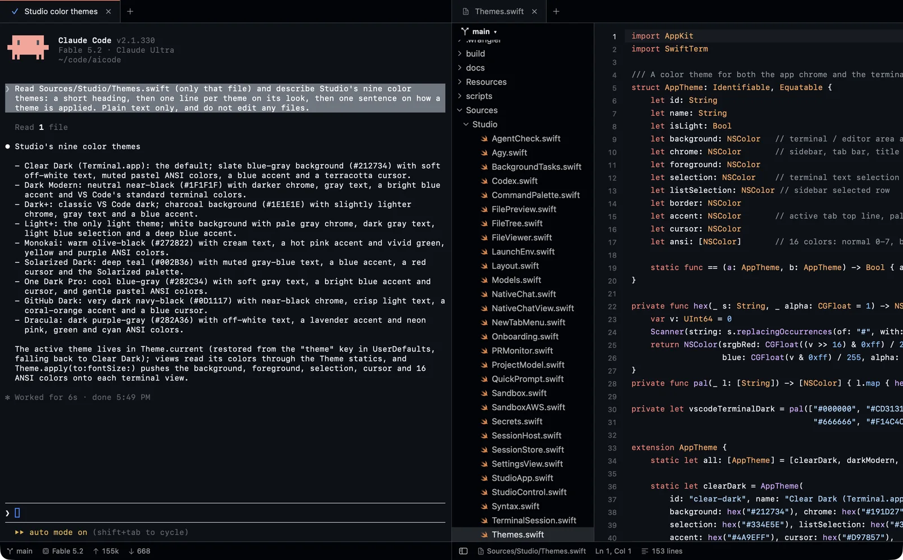
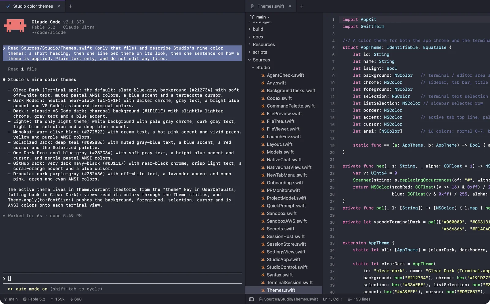
A session brings up a sandbox with your project pushed in, runs commands and servers there, and hands you an HTTPS link to a port.
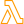
AWS Lambda: MicroVMs in your own AWS account, for up to 8 hours.A worker is an always-on Linux box or Mac of yours. Sessions run there in tmux and show in tabs like local ones.
On the machine itself. It needs tmux and an agent CLI you are signed in to.
It runs under systemd, so it survives reboots, and prints a pairing link.
In Settings, under Workers. Studio talks to it directly over Tailscale, Cloudflare Zero Trust or your LAN.
Every other command is in the palette, which also searches past sessions in every project.
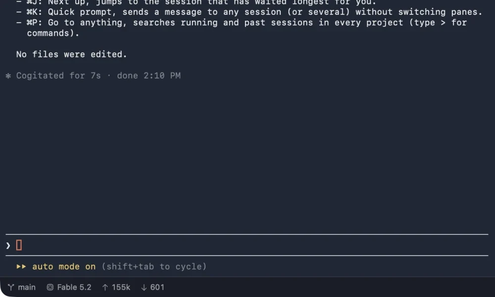
Studio is free. You pay only for the agent accounts and sandbox providers you already use.
Ask on GitHubmacOS 14 or later, and Claude Code installed and signed in. Codex and Antigravity are optional.
No. It is the real CLI in a real terminal, so your slash commands, hooks, MCP servers and settings work as before.
They keep running. Each tab runs in a hidden tmux session, and Studio reattaches to it on the next launch.
No. It is an independent open-source project, not affiliated with or endorsed by Anthropic.
Yes. Clone the repository and run ./build-app.sh --open. It needs Xcode 16 or the Swift 6 toolchain.